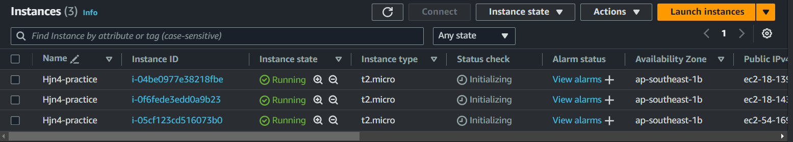

Functional Programming
- Example
- Input Variables
- Gán giá trị cho variable
- Validating variables
- Output
- Count parameter
- For expressions
- Format function
- Demo
- Static Web S3 Bucket
- Local values
Example
provider "aws" {
region = "us-west-2"
}
data "aws_ami" "ubuntu" {
most_recent = true
filter {
name = "name"
values = ["ubuntu/images/hvm-ssd/ubuntu-focal-20.04-amd64-server-*"]
}
owners = ["099720109477"]
}
resource "aws_instance" "hello" {
ami = data.aws_ami.ubuntu.id
instance_type = "t2.micro"
}
Với file config trên ta phải dùng hardcode, khá bất tiện do đó ta sẽ dùng variable
Input Variables
Ta có thể định nghĩa trong main.tf hoặc tạo riêng 1 file variable.tf khác:
variable "instance_type" {
type = string
description = "Instance type of the EC2"
}
- Type: bắt buộc phải khai báo
- Basic type: string, number, bool
- Complex type: list(), set(), map(), object(), tuple()
- Trong terraform, type number và type bool sẽ được convert thành type string khi cần thiết. Nghĩa là 1 sẽ thành "1", true sẽ thành "true"
- Thay vì gán cứng => instance_type = var.instance_type
Đây chỉ là mới khởi tạo variable thoi, ta cần gán giá trị cho nó nữa
Gán giá trị cho variable
- Để gán giá trị cho biến, ta sẽ tạo một file tên là terraform.tfvars:
instance_type = "t2.micro"
- Khi ta chạy terraform apply thì file terraform.tfvars sẽ được terraform sử dụng mặc định để load giá trị cho biến
- Nếu không muốn set mặc định như thế, thì ta tạo 1 file khác ví dụ production.tfvars với nội dung tương tự:
terraform apply -var-file="production.tfvars"
Validating variables
Ta có thể chỉ định những giá trị được phép của variable bằng cách:
variable "instance_type" {
type = string
description = "Instance type of the EC2"
validation {
condition = contains(["t2.micro", "t3.small"], var.instance_type)
error_message = "Value not allow."
}
}
Output
Giá trị của output block sẽ được in ra terminal, cú pháp của output như sau.
- Để in được giá trị public IP của EC2, ta thêm vào file main.tf đoạn code sau:
#...
output "ec2" {
value = {
public_ip = aws_instance.hello.public_ip
}
}
Count parameter
- Là một thuộc tính trong terraform chứ không phải của Resource type block thuộc provider
- Resource type block chỉ có chứa các thuộc tính mà provider cung cấp
- Meta argument là thuộc tính của terraform => nghĩa là ta có thể sử dụng nó ở bất kì resource block nào.
- Cập nhật lại file main.tf mà sẽ tạo ra 5 EC2 như sau:
provider "aws" {
region = "us-west-2"
}
data "aws_ami" "ubuntu" {
most_recent = true
filter {
name = "name"
values = ["ubuntu/images/hvm-ssd/ubuntu-focal-20.04-amd64-server-*"]
}
owners = ["099720109477"]
}
resource "aws_instance" "hello" {
count = 5
ami = data.aws_ami.ubuntu.id
instance_type = var.instance_type
}
output "ec2" {
value = {
public_ip1 = aws_instance.hello[0].public_ip
public_ip2 = aws_instance.hello[1].public_ip
public_ip3 = aws_instance.hello[2].public_ip
public_ip4 = aws_instance.hello[3].public_ip
public_ip5 = aws_instance.hello[4].public_ip
}
}
For expressions
for <value> in <list> : <return value>
-
Ví dụ dùng for:
- Tạo ra một array mới với giá trị của array mới sẽ được upper: [for s in var.words : upper(s)]
- Tạo ra một object mới với value của object được upper: { for k, v in var.words : k => upper(s) }
-
Ta sẽ dùng for để rút gọn phần output IP của EC2. Cập nhật lại file main.tf:
#...
resource "aws_instance" "hello" {
count = 5
ami = data.aws_ami.ubuntu.id
instance_type = var.instance_type
}
output "ec2" {
value = {
public_ip = [ for v in aws_instance.hello : v.public_ip ]
}
}
Phần output trên sẽ in ra cho ta giá trị public_ip là một mảng IP của tất cả EC2 được tạo ra. Còn nếu muốn in output ra theo kiểu { public_ip1: <value>, public_ip2: <value> } thì ta có thể dùng format function.
Format function
#...
resource "aws_instance" "hello" {
count = 5
ami = data.aws_ami.ubuntu.id
instance_type = var.instance_type
}
output "ec2" {
value = { for i, v in aws_instance.hello : format("Public_IP %d: ", i + 1) => v.public_ip }
}
Demo
Tạo 3 EC2 instances, với các thứ đã học ở trên.
main.tf
terraform {
required_providers {
aws = {
source = "hashicorp/aws"
version = "~> 5.38"
}
}
}
provider "aws" {
region = "ap-southeast-1"
}
data "aws_ami" "ubuntu" {
most_recent = true
filter {
name = "name"
values = ["ubuntu/images/hvm-ssd/ubuntu-focal-20.04-amd64-server-*"]
}
owners = ["099720109477"]
}
resource "aws_instance" "hello" {
count = 3
ami = data.aws_ami.ubuntu.id
instance_type = var.instance_type
tags = {
Name = "Hjn4-practice"
}
}
output "ec2" {
value = { for i, v in aws_instance.hello : format("Public_IP%d", i + 1) => v.public_ip }
}
variable.tf
variable "instance_type" {
type = string
description = "Instance type of the EC2"
validation {
condition = contains(["t2.micro"], var.instance_type)
error_message = "Just allow t2.micro"
}
}
terraform.tfvars
instance_type = "t2.micro"
Result
#...
aws_instance.hello[0]: Creation complete after 32s [id=i-0f6fede3edd0a9b23]
aws_instance.hello[2]: Creation complete after 32s [id=i-04be0977e38218fbe]
aws_instance.hello[1]: Creation complete after 32s [id=i-05cf123cd516073b0]
Apply complete! Resources: 3 added, 0 changed, 0 destroyed.
Outputs:
ec2 = {
"Public_IP1" = "18.143.78.17"
"Public_IP2" = "54.169.140.195"
"Public_IP3" = "18.139.110.75"
}

Static Web S3 Bucket
Sẽ quay lại đọc hiểu code của phần push file lên S3
-
Tham khảo và kết hợp 2 source:
-
main.tf:
# provider "aws" {
# region = var.region
# access_key = var.access_key
# secret_key = var.secret_key
# }
# Creating Random String for bucket name
# resource "random_string" "random" {
# length = 6
# special = false
# upper = false
# }
# provider "aws" {
# region = "ap-southeast-1"
# }
# Creating S3 Bucket
resource "aws_s3_bucket" "bucket" {
bucket = "terraform-learn-bucket-hjn4" #${random_string.random.result}"
# force_destroy = true
}
resource "aws_s3_bucket_website_configuration" "static_web" {
bucket = aws_s3_bucket.bucket.id
index_document {
suffix = "index.html"
}
error_document {
key = "error/index.html"
}
}
resource "aws_s3_bucket_policy" "bucket_policy" {
bucket = aws_s3_bucket.bucket.id
policy = file("s3_static_web_policy.json")
}
# Public Access
resource "aws_s3_bucket_public_access_block" "public_access_block" {
bucket = aws_s3_bucket.bucket.id
block_public_acls = false
block_public_policy = false
ignore_public_acls = false
restrict_public_buckets = false
}
locals {
mime_types = {
html = "text/html"
css = "text/css"
scss = "text/x-scss"
md = "text/markdown"
MD = "text/markdown"
ttf = "font/ttf"
woff = "font/woff"
woff2 = "font/woff2"
otf = "font/otf"
js = "application/javascript"
map = "application/javascript"
json = "application/json"
jpg = "image/jpeg"
png = "image/png"
svg = "image/svg+xml"
eot = "application/vnd.ms-fontobject"
}
}
# will upload all the files present under HTML folder to the S3 bucket
resource "aws_s3_object" "upload_object" {
for_each = fileset(path.module, "static-web/**/*")
bucket = aws_s3_bucket.bucket.id
key = replace(each.value, "static-web", "")
source = each.value
etag = filemd5("${each.value}")
content_type = lookup(local.mime_types, split(".", each.value)[length(split(".", each.value)) - 1])
}
- s3_static_web_policy.json:
{
"Version": "2012-10-17",
"Statement": [
{
"Sid": "PublicReadGetObject",
"Effect": "Allow",
"Principal": "*",
"Action": [
"s3:GetObject"
],
"Resource": [
"arn:aws:s3:::terraform-learn-bucket-hjn4/*"
]
}
]
}
- outputs.tf:
output "s3_bucket_id" {
value = aws_s3_bucket_website_configuration.static_web.website_endpoint
}
- Lần đầu plan ta không bị báo lỗi gì cả
- Tuy nhiên sau đó ta apply thì error:
│ Error: putting S3 Bucket (terraform-learn-bucket-hjn4) Policy: operation error S3: PutBucketPolicy, https response error StatusCode: 403, RequestID: XS5Z24E8SPP069YE, HostID: r/WDyVv2jIMYw7V0ueTKf2HguRPsD1hBpBgvb9yc6DKdM5QIMD5/HrRssxVuaGk+FxINZiZ+JfY=, api error AccessDenied: Access Denied
│
│ with aws_s3_bucket_policy.bucket_policy,
│ on main.tf line 34, in resource "aws_s3_bucket_policy" "bucket_policy":
│ 34: resource "aws_s3_bucket_policy" "bucket_policy" {
- Lúc này bucket đã được tạo tuy nhiên vẫn chưa có policy, access denied, do đó ta sẽ apply lại 1 lần nữa để put policy:
aws_s3_bucket_policy.bucket_policy: Creating...
aws_s3_bucket_policy.bucket_policy: Creation complete after 1s [id=terraform-learn-bucket-hjn4]
Apply complete! Resources: 1 added, 0 changed, 0 destroyed.
Outputs:
s3_bucket_id = "terraform-learn-bucket-hjn4.s3-website-ap-southeast-1.amazonaws.com"
file("s3_static_policy.json"): được dùng để load cả content file for_each = fileset(path.module, "static-web/**/*"): tải toàn bộ subdirs, files trong thư mục
- Tạm thời chưa cần hiểu code phần aws_s3_bucket_object
- Phần quan trọng ở đây là fileset function, thay vì chỉ tải một file, thì fileset sẽ tải toàn bộ file trong thư mục đó lên theo dạng set.
Local values
- Không giống như variable block, ta cần phải khai báo type, thì locals block ta sẽ gán thẳng giá trị cho nó. Ví dụ như sau:
locals {
one = 1
two = 2
name = "max"
flag = true
}
- Để truy cập giá trị local thì ta dùng cú pháp local.<KEY>